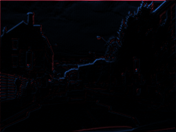
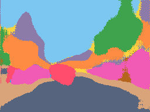

Redes convolucionales
Segmentación
De la foto a una etiqueta por píxel
¿Qué es segmentar?
¿Qué hay, dónde y qué es cada píxel?


- Clasificación¿Qué hay?1 vector de clases
- Detección¿Dónde, más o menos?N cajas
- Segmentación semántica¿Qué es cada píxel?360 × 480 etiquetas
- Segmentación de instancias¿Qué objeto es cada píxel?una máscara por objeto
Ronneberger, Fischer y Brox, 2015
La arquitectura U-Net
Encoder (bajada): comprime · Decoder (subida): reconstruye · Skips (punteadas): copian el detalle
Lo que hay que saber
Paso a paso · parte 1 de 3
El encoder: bajar por la U
Paso 1
La entrada
La red recibe la foto como 3 matrices de números (rojo, verde y azul), con valores de 0 a 1.
192 × 256 × 3


Paso 2
Convolución 3 × 3
Un filtro de 3 × 3 × 3 = 27 pesos aprendidos recorre la foto. En cada posición: multiplicar y sumar.
- w = peso del filtro
- x = valor del píxel
- i, j = fila y columna dentro del 3 × 3
- c = canal (R, G, B)
16 filtros → 16 mapas
Números reales de la red. Se muestra la capa R del filtro; las 3 capas se suman.

salida de este filtro · 192 × 256Paso 3
BatchNorm + ReLU
BatchNorm centra y escala los valores. ReLU cambia los negativos (azul) por 0 y deja pasar los positivos.
0% de los valores quedan en 0


Paso 4
Otra convolución
Una segunda conv 3 × 3 (+ BatchNorm + ReLU). Salen 16 mapas; cada uno responde a un patrón distinto: bordes, cielo, sombras…
192 × 256 × 16

Paso 5
Max pooling 2 × 2
De cada cuadro de 2 × 2 se queda el máximo. El mapa se reduce a la mitad; el número de canales no cambia.
192 × 256 × 16 → 96 × 128 × 16


Paso 6
Repetir 4 veces
Conv, conv, pool… en cada nivel el tamaño ÷ 2 y los canales × 2. En el fondo de la U (el cuello de botella) la red sabe qué hay, pero con muy poca resolución.
12 × 16 × 256
Paso a paso · parte 2 de 3
El decoder: subir por la U
Paso 7
Convolución transpuesta 2 × 2
Cada valor se multiplica por un kernel de 2 × 2 aprendido y ocupa un cuadro de 2 × 2. Tamaño × 2, canales ÷ 2.
12 × 16 × 256 → 24 × 32 × 128


Paso 8
Concatenar (skip)
Se pega el mapa del encoder del mismo tamaño como canales extra. Trae los detalles que se perdieron al reducir.
128 + 128 = 256 canales
 24 × 32 × 256
24 × 32 × 256Paso 9
Dos convoluciones 3 × 3
Mezclan lo que viene de abajo (qué es) con la copia (dónde está).
24 × 32 × 256 → 24 × 32 × 128
24 × 32 × 256
Paso 10
Repetir hasta el tamaño original
Subir, pegar la copia, dos convoluciones… 4 veces. El último nivel recibe la copia de 192 × 256, con todos los bordes finos.
192 × 256 × 16
Paso a paso · parte 3 de 3
La salida: una clase por píxel
Paso 11
Convolución 1 × 1
Un filtro de 1 × 1 mira un solo píxel: combina sus 16 canales en 11 puntajes, uno por clase. Es como una capa densa aplicada a cada píxel.
192 × 256 × 16 → 192 × 256 × 11
Paso 12
Softmax
Convierte los 11 puntajes de cada píxel en probabilidades que suman 1.
- z = puntaje de la clase
- c = clase
- k = recorre las 11 clases
Paso 13
La clase más probable
Cada píxel toma la clase con mayor probabilidad (argmax). Eso es la máscara.
192 × 256 etiquetas


Mismo entrenamiento, una diferencia
¿Para qué sirven las skips?

Misma red, sin copiar los mapas del encoder. Sin skips, el decoder tiene que adivinar los bordes desde 12 × 16.
Cómo se entrena
Pérdida y métrica
- N = número de píxeles
- yi = clase real del píxel i
- pi,y = probabilidad que la red le dio a esa clase
- w = peso de la clase: las raras pesan más
- A = píxeles que de verdad son de la clase
- B = píxeles que la red dijo que son
- mIoU = promedio de las 11 clases
CamVid · 367 fotos de entrenamiento
Así aprende a ver
Sin skips
U-Net
233 fotos de prueba que nunca vio
¿Qué tan bien segmenta?

Rojo = píxel equivocado. Los errores viven en los bordes y en lo delgado.
Lo raro y delgado es lo difícil: postes, señales, peatones, ciclistas.
Parientes de la U-Net
Otras arquitecturas
Paso a paso
- Una CNN de clasificación (VGG) sin capas densas.
- Conv 1 × 1: puntajes por clase a 1/32 del tamaño.
- Agranda × 2 y suma los puntajes de pool4; otra vez con pool3.
- Agranda × 8 hasta el tamaño original.
Diferencia con U-Net
Las skips suman puntajes en vez de concatenar mapas, y casi no hay decoder: el último salto es × 8. Bordes más gruesos.
Paso a paso
- Encoder VGG: conv + pool, y guarda dónde estaba cada máximo.
- Decoder simétrico: unpooling pone cada valor en la posición guardada.
- Convoluciones rellenan los huecos.
- Softmax por píxel.
Diferencia con U-Net
No copia mapas completos: solo copia las posiciones (índices). Usa mucha menos memoria, pero recupera menos detalle. Nuestra red “sin skips” es como SegNet sin índices.
Paso a paso
- Encoder (ResNet o Xception) que solo reduce a 1/16.
- ASPP: 4 convoluciones dilatadas en paralelo (rates 1, 6, 12, 18) + promedio global.
- Se concatenan y una conv 1 × 1 las combina.
- Decoder corto: × 4, pega rasgos de 1/4, conv 3 × 3, × 4.
Diferencia con U-Net
Ve más contexto sin reducir la imagen, gracias a la convolución dilatada. Su decoder es más simple: un solo skip.
Paso a paso
- Backbone (ResNet + FPN) extrae mapas a varias escalas.
- RPN propone cajas donde puede haber objetos.
- RoIAlign recorta cada caja a 14 × 14.
- Tres cabezas: clase, caja ajustada y una mini FCN que da la máscara 28 × 28 de ese objeto.
Diferencia con U-Net
Segmenta instancias: primero detecta cada objeto y luego segmenta dentro de su caja. Dos autos = dos máscaras.
Paso a paso
- Un encoder grande (ViT) procesa la imagen una sola vez.
- El usuario da una pista: un punto, una caja o texto.
- Un decoder ligero (transformer) cruza la pista con la imagen.
- Devuelve 3 máscaras posibles con su calificación.
Diferencia con U-Net
No tiene clases fijas: segmenta lo que señales. Entrenado con 1,100 millones de máscaras (SA-1B), funciona sin reentrenar.

| U-Net | FCN | SegNet | DeepLab v3+ | Mask R-CNN | SAM | |
|---|---|---|---|---|---|---|
| Tipo | semántica | semántica | semántica | semántica | instancias | lo que se señale |
| Cómo agranda | conv transpuesta | × 2, × 2, × 8 | unpooling con índices | bilineal × 4, × 4 | por caja (28 × 28) | decoder transformer |
| Qué copia del encoder | mapas completos | puntajes (suma) | posiciones del máximo | un mapa de 1/4 | mapas FPN | embedding de la imagen |
| Idea clave | skips por nivel | quitar las densas | poca memoria | conv dilatada + ASPP | detectar y luego segmentar | pistas, sin clases |
| Bueno para | pocos datos, imágenes médicas | la idea base | dispositivos chicos | escenas grandes | contar objetos | etiquetar rápido |
¿Preguntas?
github.com/Mmateo101/Segmentation_presentation